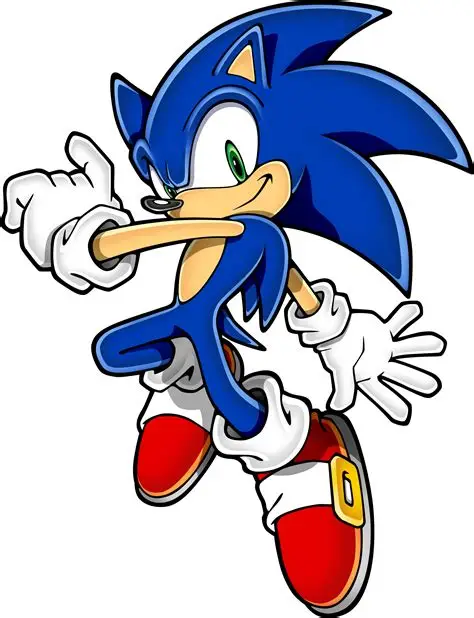
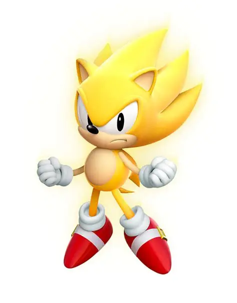
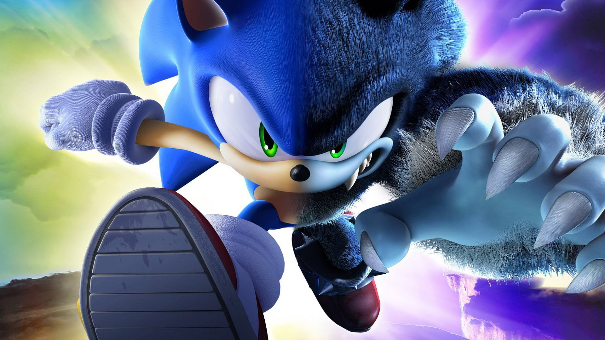
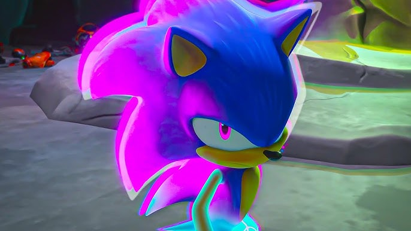

Sonic é o ouriço mais rápido do mundo e um dos personagens mais icônicos dos videogames. Criado pela SEGA, ele corre em alta velocidade para coletar anéis dourados e salvar o mundo das garras do maligno cientista Dr. Eggman.
Ao longo de suas aventuras, Sonic conta com a ajuda de grandes amigos, como o inteligente Tails e o forte Knuckles. Juntos, eles protegem as Esmeraldas do Caos e garantem a paz e a liberdade em seu planeta.



